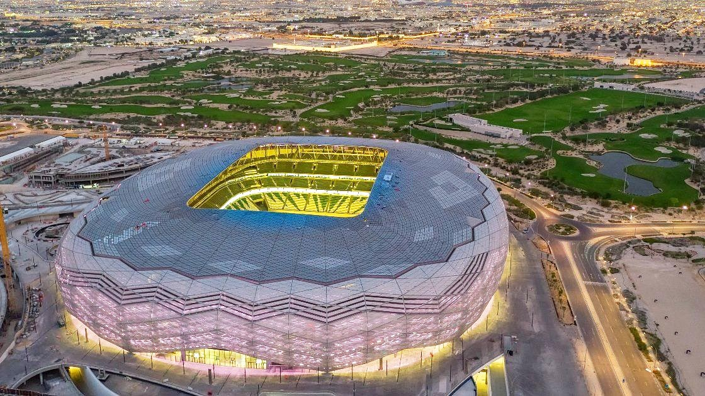

Cette arène, prête à recevoir des gladiateurs, est située à Lusail, une ville située au nord de Doha. Ensuite, littéralement établi depuis que la ville a été construite pour cette Coupe du Monde. Situé à seulement 15 km de Doha, le stade sera desservi en métro directement depuis la capitale et sera donc facilement accessible.
Il est situé dans la ville d'Al-Khor au nord de Doha. Il peut accueillir jusqu'à 60 000 personnes. Il accueillera la cérémonie d'ouverture et le premier match de cette Coupe du monde 2022 et l'une des deux demi-finales. De plus, l'année dernière, il a assisté à la cérémonie d'ouverture de la Coupe arabe de la FIFA 2021.
Le stade international Khalifa est l'un des deux seuls stades qui existaient avant que la Coupe du monde 2022 ne soit attribuée au Qatar. Ensuite, construite en 1976, l'arène emblématique du pays a été rénovée et rouverte en 2017. En plus, elle peut accueillir un peu plus de 45 000 personnes et elle accueillera aussi le match pour la 3e place.
L'Education City Stadium est un stade de 40 000 places situé sur le campus de la principale université du Qatar. Elle accueillera des matches jusqu'aux quarts de finale de cette Coupe du monde 2022. Sa silhouette a la forme d'un diamant taillé. Ensuite, le bâtiment réduira de moitié sa capacité après le tournoi, car un don de plus de 20 000 places doit être utilisé pour construire des stades dans les pays en développement.

Ce stade est construite sur l'ancien stade Ahmad bin Ali d'Al-Rayyan, cette enceinte de 40 000 places permettra la tenue de matches jusqu'aux quarts de finale. Située aux portes du désert, Al-Rayyan est la plus grande ville du pays (600 000 habitants), mais aussi l'une des plus traditionnelles. En plus, les spectateurs pourront parcourir les quelques kilomètres qui la séparent de Doha via une ligne de métro, là encore créée pour la compétition.

Ce stade peut accueillir jusqu'à 40 000 personnes, le stade Al-Thumama est situé à 12 km du centre de Doha. Son design s'inspire du kufi, un couvre-feu traditionnel en tissu porté par les hommes arabes. La région accueillera l'un des quatre quarts de finale. Ensuite, comme de nombreux stades construits pour cette Coupe du monde 2022, celui-ci divisera par deux sa capacité après le tournoi et fera don de plus de 20 000 places pour encourager la construction de stades dans les pays en développement. Il sera relié à la capitale par une ligne de métro dédiée.

C'est le stade le plus mystérieux de cette Coupe du monde au Qatar. Avec 40 000 places assises, le stade Ras Abu Aboud ou stade 974 est une prouesse écologique située sur les rives du golfe Persique. Les enceintes sont fabriquées à partir de contenants réutilisables et d'autres matériaux. Ensuite, immédiatement après la Coupe du monde, il sera démantelé et certaines parties seront utilisées pour d'autres projets dans le pays. Fabriqué à partir de conteneurs et d'autres matériaux réutilisables, le stade sera démantelé après la Coupe du monde 2022 et des parties de celui-ci seront utilisées pour réaliser d'autres projets dans le pays. Le stade Ras Abu Aboud n'accueillera que la phase de groupes et les huitièmes de finale.
Le stade Al-Janoub est un stade d'une capacité d'environ 40 000 spectateurs, conçu par la défunte architecte de renommée mondiale Zaha Hadid. Les courbes du bâtiment s'inspirent des coquilles des bateaux de pêche aux perles qui ont longtemps opéré le long des côtes de la péninsule arabique. Ensuite, dans tous les stades, un système de climatisation a été installé pour faire face aux températures élevées de la zone. Au total, le Qatar a dépensé pas moins de 4 milliards USD pour prendre les dispositions nécessaires pour accueillir cette Coupe du monde 2022.